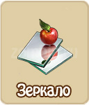

Получено: файл; исходный URL. Получены исходные байты по адресу страницы; идентичность оригинальному домену при замене хоста не подтверждена. Страница: источник.
Зеркало
ВКонтакте; данные из ZOMBIA; 21 Декабря 2011, 19:52- Тип
- нет данных
- Покупка
- нет данных
- Продажа
- нет данных
- Как получить
- Сделать в Модернизированном Университете : 05 [изображение: Стекло] +01 [изображение: Фольга] (ВКонтакте, ZOMBIA; требует сверки).
- Применение
- нет данных
- Особенности
- нет данных
- Версия и дата
- ВКонтакте; данные из ZOMBIA; 21 Декабря 2011, 19:52
Данные по источнику · ВКонтакте, ZOMBIA · 21 Декабря 2011, 19:52; дата редакции не установлена
Предварительно: Данные одной исторической фанатской страницы; цифры и подписи изображений требуют сверки. Описание и условия сохранены по колонкам без додумывания.. Требуется сверка.
- Описание материала
- [изображение: Зеркало] Стоимость по лимиту: 900 монет Стоимость: 1 Зб
- Участвует в строительстве
- нет текстовых данных; возможны неподписанные изображения
- Как достать
- Сделать в Модернизированном Университете : 05 [изображение: Стекло] +01 [изображение: Фольга]
- Участвует в создании
- [изображение: Шатёр, как построить Шатёр]


Данные по источнику · браузерная Зомби Ферма / Зомби Мания, платформа не уточнена · дата URL — дата публикации, редакция могла обновляться позже
Предварительно: Прочитана отдельная статья. Иллюстрации и ссылки ведут к ЗомбиСити; независимость не доказана. Исторические параметры требуют сверки редакции.. Требуется сверка.
Данные по источнику · браузерная Зомби Ферма / Зомби Мания; платформа требует проверки · дата URL не гарантирует дату редакции
Предварительно: Индивидуальная страница прочитана автоматически, подписи значков могут содержать ошибки; даты редакции и независимость от ЗомбиСити не установлены.. Требуется сверка.
- Основной блок страницы и подписи изображений
- Материал [иллюстрация: Зеркало] Зеркало Цена покупки: 1 [иллюстрация: Зомбаксы] Цена продажи: 900 [иллюстрация: Монеты] Продать или купить Зеркало можно в Обменке Зомби Фермы Материал игры Зомби Ферма Зеркало создать не сложно. Для этого понадобится Фольга и Стекло из бесплатных подарков друзей. Ну и еще несложная постройка. Зеркало частенько применяют в строительстве. Зеркало можно создать в Улучшенном Университете: Зеркало [иллюстрация: Зеркало] = 5 Стекло [иллюстрация: Стекло] + 1 Фольга [иллюстрация: Фольга] [иллюстрация: Стрелка] Университет [иллюстрация: Университет] Зеркало принимает участие в строительстве: Часовая башня [иллюстрация: Часовая башня] Шатёр [иллюстрация: Шатёр] Огромная ёлка [иллюстрация: Огромная ёлка] Школьный автобус [иллюстрация: Школьный автобус] Лаз в Копи царя Зомби [иллюстрация: Лаз в Копи царя Зомби] Летающая тарелка [иллюстрация: Летающая тарелка] Флаг Донецкого Шахтера [иллюстрация: Флаг Донецкого Шахтера] Фургон [иллюстрация: Фургон] Коса [иллюстрация: Коса] Перевал №4 [иллюстрация: Перевал №4] Хрупкое яйцо [иллюстрация: Хрупкое яйцо] Зеркало можно найти в сокровищах: Весенний фонтан [иллюстрация: Весенний фонтан]
Связанные сущности
нет проверенных связей — требуется сверка.